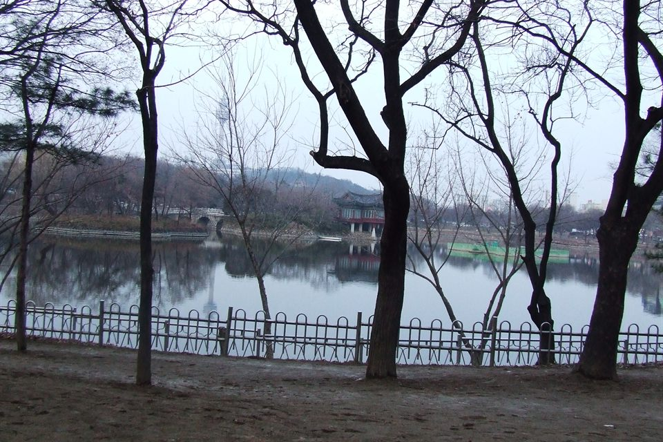

대구 달서구는 관리 중인 중·고등학교만 51곳입니다. 상인고등학교·대곡고등학교·성서고등학교·원화여자고등학교 같은 고등학교와 상인중학교·대곡중학교·도원중학교가 구 안에 흩어져 있습니다. 달서구는 한 구 안에서도 거리가 꽤 됩니다. 상인동·월성동 쪽과 성서 쪽은 오가는 데만 시간이 드는 거리라, 학원을 옮겨 다니다 저녁이 사라지는 학생은 집으로 오는 1:1 영어과외나 수학과외를 따로 찾게 됩니다.
오늘은 달서구로 직접 찾아가는 선생님들 가운데 과목이 다른 두 분을 소개합니다. 한 분은 영어 한 과목을 내신과 수행평가까지 함께 보는 선생님, 한 분은 수학과 과학을 묶어서 보는 선생님입니다.
달서구에서 중등 영어과외를 찾을 때, 문제집만 푸는 수업으로는 해결되지 않는 부분이 있습니다. 요즘 학교 영어는 지필 점수만으로 끝나지 않고 말하기·쓰기 수행평가가 함께 붙기 때문입니다. 이 선생님은 학교 내신과 수행평가 과제 첨삭, 발표 준비까지 한 수업 안에서 봅니다.
문법은 개념부터 실전 문제까지 이해 중심으로 가고, 어휘는 빈출 어휘를 따로 모아 집중해 외우는 방식입니다. 정기적으로 학습 상담과 성적 피드백을 진행하고 수업마다 리포트를 남기기 때문에, 집에서도 오늘 무엇을 했는지 확인할 수 있습니다. 방문 수업만 하는 선생님이라 수업은 학생 집에서 진행합니다.
박ㅇ현 선생님 상세 프로필 →달서구에서 중등 수학과외와 과학을 한 선생님에게 맡기고 싶을 때 맞는 선생님입니다. 두 과목을 따로 잡으면 시간표가 꼬이고 어느 쪽도 충분히 못 보는 일이 생기는데, 한 선생님이 함께 보면 그 주에 급한 과목으로 비중을 옮길 수 있습니다.
수업은 "이해할 때까지 설명한다"는 쪽입니다. 진도를 빨리 빼는 대신 학생이 스스로 설명할 수 있는 상태를 만들고 넘어갑니다. 처음 보는 유형의 문제를 만나도 스스로 풀어내는 힘을 목표로 두기 때문에, 유형을 외워서 푸는 습관이 굳은 학생에게 특히 권합니다. 초등 4학년부터 고3까지 폭이 넓어 학년이 올라가도 선생님을 바꾸지 않고 이어 갈 수 있습니다.
한ㅇ이 선생님 상세 프로필 →학교마다 진도와 시험 범위가 달라서, 학교별로 준비법을 따로 정리해 두었습니다.
👉 달서구 영어과외 선생님 · 달서구 수학과외 선생님 · 달서구 관리 학교 전체 보기